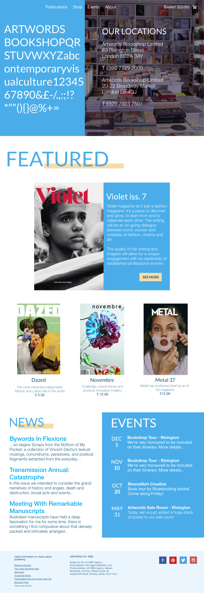

For my first user interaction class, I attempted to redesign the website for a local magazine shop in the UK. Simplicity, ease of access, and streamline design were the main principles followed while considering this prototype.
The original website can be found here.
Artwords
